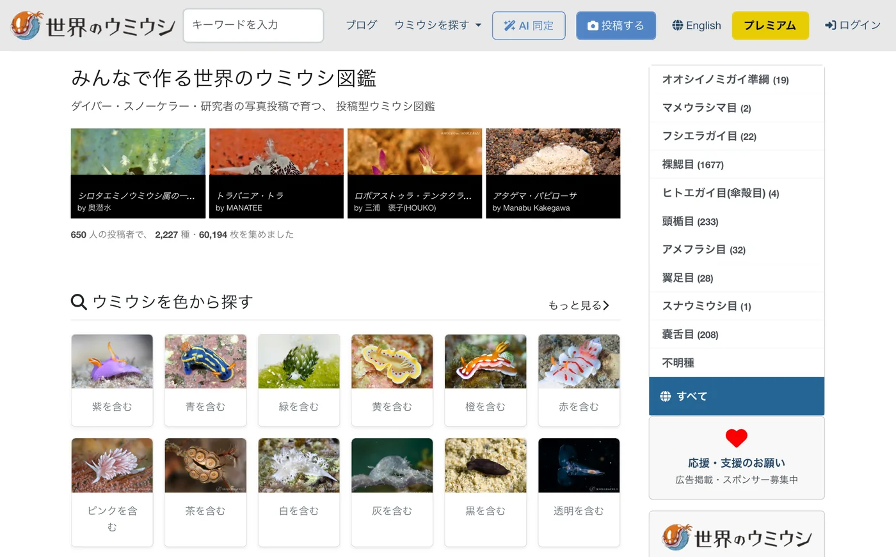
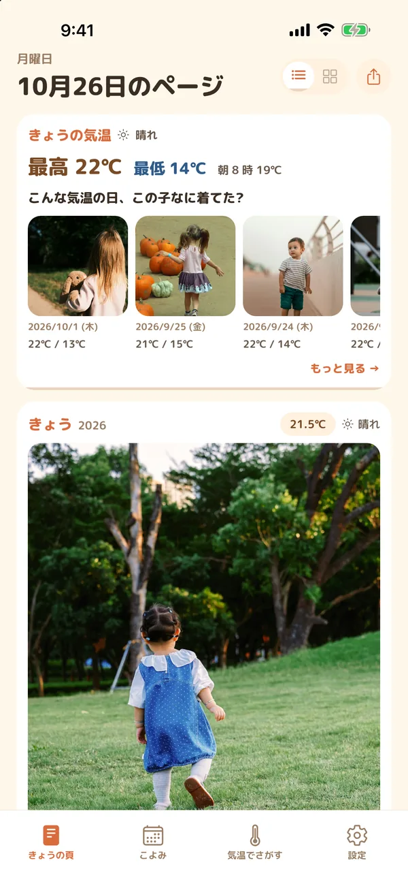
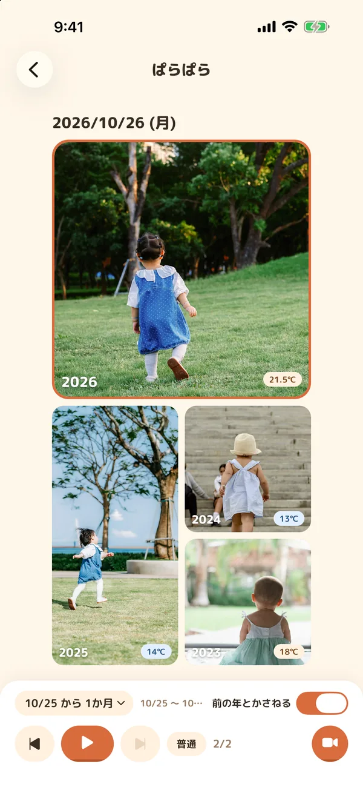
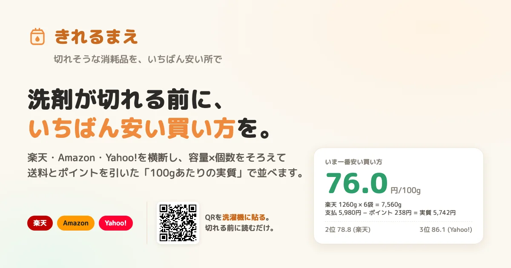

図鑑と、暮らしのアプリと、お店を守るプラグインをつくっています。
プロダクト


きれるまえ
kirerumae.com
切れそうな消耗品を、いちばん安い所で。QR を洗濯機や棚に貼っておき、切れる前に読むと、楽天・Amazon・Yahoo! を横断して送料とポイントを引いた実質の最安が出ます。

脆弱性を AI で診断・修正するプラグイン
AI Security Check & Fix
カスタマイズが入っていて、更新できずにいるお店とサイトのためのプラグインです。AI が中まで調べ、見つけた弱点(脆弱性)を持ち主の承認で直します。直したあとに開かなければ、その場で元に戻します。データベースの中身とアクセスのログは読みません。EC-CUBE 4.2・4.3 と WordPress に対応。無料の点検から始められます。

データ移行プラグイン
Data Migration for EC-CUBE
古い EC-CUBE(2.x / 3.x / 4.0 / 4.1)から 4.2 / 4.3 へ、会員・商品・カテゴリ・受注のデータを移すプラグイン。2 系は標準のバックアップ(.tar.gz)をそのまま上げるだけです。
会社
- 商号
- 合同会社うみうしラボ
- 代表
- 代表社員 木元 伸彦ここにあるプロダクトは、代表の木元が作っています。
- 所在地
- 〒160-0022 東京都新宿区新宿一丁目36番2号 新宿第七葉山ビル3階
- 設立
- 2026年11月6日
- 法人番号
- 8011103018219
- 事業
- アプリと Web サービス、EC-CUBE・WordPress のプラグインの開発と販売
- 書いたもの
- Zenn